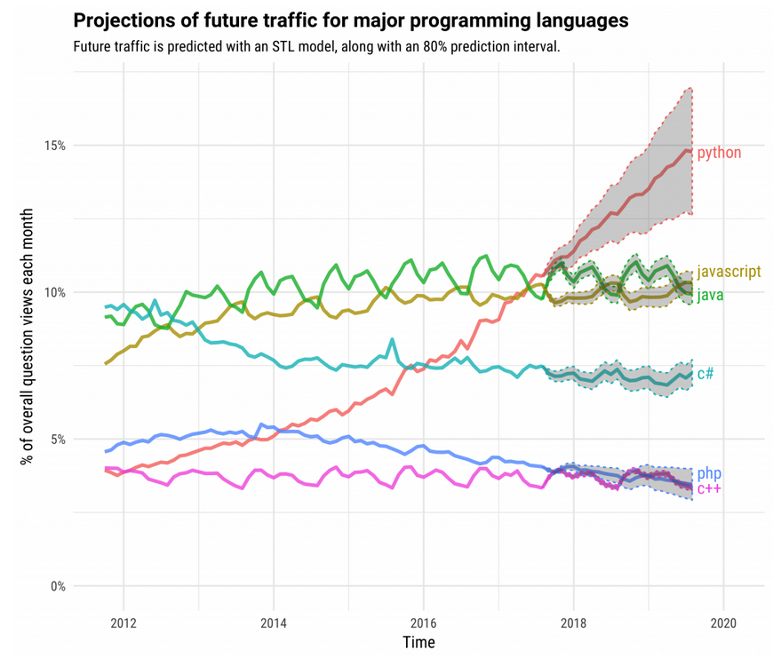

# Python et vous <img src="assets/img/snakes_indiana_jones.gif" height="450px"> </img> <div style="font-size:1.5rem;margin-top:-20px;"> Pierre Poulain [[@pierrepo](https://twitter.com/pierrepo)] ~ 21/09/2018 </div> --- # Python 2.x is over ! <iframe id="python 2.7 countdown" title="python 2.7 countdown" width="900" height="200" src="https://pythonclock.org/"> </iframe> --- # Git et GitHub <img src="assets/img/PhD_Comics__Final.doc__1531__20121212.gif" height="500px" style="margin-top:-20px;"> </img> <div class="ref"> <http://phdcomics.com/comics/archive.php?comicid=1531> </div> --- ### Débuter avec Git et Github en 30 min <iframe width="560" height="315" src="https://www.youtube-nocookie.com/embed/hPfgekYUKgk?rel=0&showinfo=0" frameborder="0" allow="autoplay; encrypted-media" allowfullscreen></iframe> <div class="ref" style="margin-top:-20px;"> <https://www.youtube.com/watch?v=hPfgekYUKgk> </div> <div class="fragment" style="font-size:1.8rem;margin-top:70px;"> D'autres ressources pour débuter (et se perfectionner) : <br /> <http://cupnet.net/git-github/> </div> --- ## Attention aux environnements ! <img src="assets/img/XKCD_Python_environment__1987__CC-BY-NC.png" height="500px" style="margin-top:-20px;"> </img> <div class="ref"> <https://xkcd.com/1987/> </div> pip & PyPI / virtualenv / pipenv / (ana)conda --- # Les communautés locales --- ## PyData Paris Meetup <https://www.meetup.com/PyData-Paris/> </img> prochain meetup : 08/10/2018 --- ## PyParis <http://pyparis.org/> </img> --- # Les communautés plus lointaines --- - PyCon (Cleveland, 01-09/05/2019) <br /> <https://us.pycon.org/2019/> - PyCon FR (Lille, 4-7/10/2018) <br /> <https://www.pycon.fr/2018/> - Europython (Edinburgh, 23-23/07/2018) <br /> <https://ep2018.europython.eu/en/> - JupyterCon (New York, 22-24/08/2018) <br /> <https://conferences.oreilly.com/jupyter/jup-ny> <div class="fragment"> La plupart des présentations sont sur </img> </div> --- # Ressources en ligne --- ## Stackoverflow  </img> <div class="ref"> <https://stackoverflow.blog/2017/09/06/incredible-growth-python/> </div> --- ## Real Python </img> <https://realpython.com/> --- # À vous ! <img src="assets/img/schwarzy.gif" height="500px"> </img>